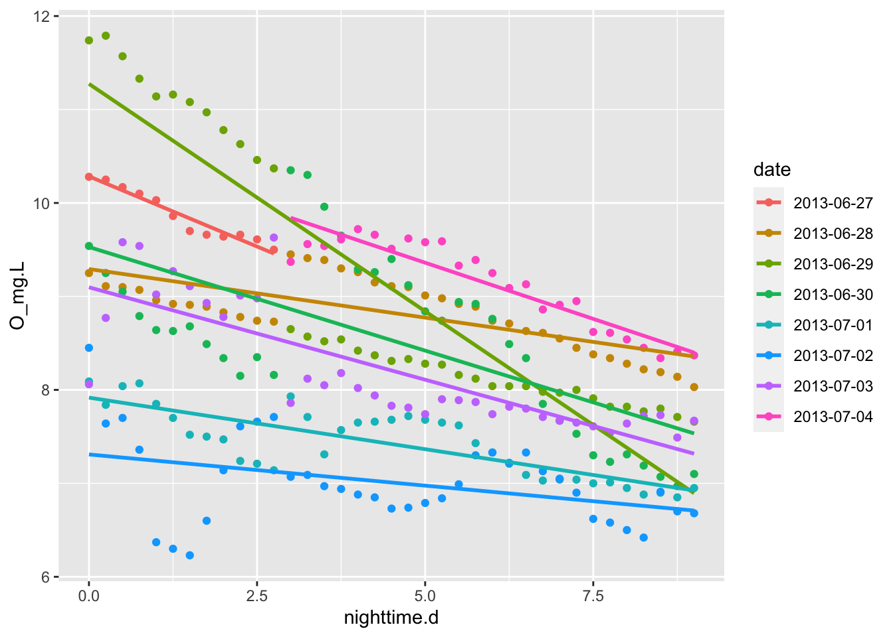

4 Lake Metabolism
In this chapter, you’ll study how lakes breath. You’ll get real data from Acton Lake, look it, and measure the rate of an inhale and an exhale. You’ll do that by hand, by hand with a spreadsheet, by hand with R, and finally using an R package, LakeMetabolizer, which is designed to do that and much more.
4.1 Estimating Productivity
Most cells respire to do the work of growth and maintenance by consuming oxygen and using it as the final electron acceptor when O\(_2\) is reduced, creating water. Because individuals comprise cells, and ecosystems comprise individuals, ecosystems respire too, and we can measure their metabolic rate using oxygen consumption and production.
We mesure ecosystem metabolic rate as net primary productivity which is the difference between gross primary productivity and respiration. Putting all of this in the same units of oxygen allows us to measure the rate, \[NPP = GPP - R\] If we assume that water column oxygen is correlated with the rates of photosynthesis, respiration, and net primary production, then we can think of the slopes of O vs. time as rates of respiration and net primary production. If we assume that respiration is constant throughout the 24 h cycle, we calculate GPP as the sum of NPP and R.
4.2 By hand, in R
Let’s practice R by importing, wrangling, and graphing data, then calculating slopes and estimating respiration, NPP, and GPP.
acton <- read_csv("data/acton.csv",
col_types = cols(date_time =
col_datetime(format = "%m/%d/%y %H:%M")),
skip = 1# skips the first line of metadata
)
summary(acton)## date_time cum_h O_mg.L
## Min. :2013-06-27 06:15:00 Min. : 0.00 Min. : 4.530
## 1st Qu.:2013-06-29 00:11:15 1st Qu.: 41.94 1st Qu.: 7.640
## Median :2013-06-30 18:07:30 Median : 83.88 Median : 8.365
## Mean :2013-06-30 18:07:30 Mean : 83.88 Mean : 8.607
## 3rd Qu.:2013-07-02 12:03:45 3rd Qu.:125.81 3rd Qu.: 9.582
## Max. :2013-07-04 06:00:00 Max. :167.75 Max. :12.700
## O_perc temp
## Min. : 56.3 Min. :24.60
## 1st Qu.: 96.4 1st Qu.:25.00
## Median :107.6 Median :26.10
## Mean :110.5 Mean :26.12
## 3rd Qu.:123.2 3rd Qu.:27.10
## Max. :167.1 Max. :28.10Let’s check our understanding of lake oxygen dynamics by plotting the time series. Ggplot understands what to do with dates.
Figure 4.1: *Oxygen dynamics from Acton Lake.
If we want to calculate the slope of the night time oxygen concentration, then we should identify what the endpoints of “day time” are so that we can do analyses on just daylight or nighttime data.
Working with times is a little tricky, because times and dates, periods, durations, and intervals are inherently tricky. The date_time variable contains all the information, and we extra tidbits from it.
# determine day/night intervals
## Start of day
morning <- 7
## end of day
evening <- 19
acton <- mutate(acton,
date = as.factor( format(date_time, "%Y-%m-%d") ),
## hour decimal format
hour.d = as.integer( format(date_time, "%H")) +
as.numeric(format(date_time, "%M"))/60,
day.d =
ifelse(hour.d >= morning & hour.d < evening, hour.d - morning, NA),
night.d =
ifelse( hour.d >= evening, hour.d-evening,
ifelse(hour.d < morning,
24 - evening + hour.d, NA)),
daylight = as.factor(
ifelse(hour.d >= morning & hour.d < evening, "day", "night"))
)
## with lubridate date(), hour(), minute()
library(lubridate)
acton <- mutate(acton,
date = as.factor( date(date_time) ),
## hour decimal format
hour.d = hour(date_time) + minute(date_time)/60,
day.d =
ifelse(hour.d >= morning & hour.d < evening, hour.d - morning, NA),
night.d =
ifelse( hour.d >= evening, hour.d-evening,
ifelse(hour.d < morning,
24 - evening + hour.d, NA)),
daylight = as.factor(
ifelse(hour.d >= morning & hour.d < evening, "day", "night"))
)
# check
# filter(acton, hour.d==3) The slope of oxygen concentration at night is respiration.
Next we will pull out one day’s worth of data.
acton2 <- subset(acton, date_time > "2013-06-27 21:00:00" & date_time < "2013-06-28 06:15:00")
qplot(x = date_time, O_mg.L, data=acton2, geom = "path")
Here is what each night looks like.
nights <- filter(acton, daylight=="night")
qplot(night.d, O_mg.L, data=nights, geom="point", colour=date) + geom_smooth(method="lm", se=FALSE)
We can calculate the average slope for all nights, forcing a straight line through each night’s data. The estimates of uncertainty and the P values won’t make sense because the data are horribly autocorrelated, but we can rely on the estimates of the coefficients, and the average slope, in particular.
##
## Call:
## lm(formula = O_mg.L ~ night.d + date, data = acton)
##
## Residuals:
## Min 1Q Median 3Q Max
## -3.9649 -0.3722 0.0813 0.3683 2.1803
##
## Coefficients:
## Estimate Std. Error t value Pr(>|t|)
## (Intercept) 10.42500 0.17214 60.563 < 2e-16 ***
## night.d -0.17335 0.01291 -13.425 < 2e-16 ***
## date2013-06-28 -0.51592 0.20392 -2.530 0.0119 *
## date2013-06-29 0.14137 0.20392 0.693 0.4886
## date2013-06-30 -0.86051 0.20392 -4.220 3.17e-05 ***
## date2013-07-01 -1.81634 0.20392 -8.907 < 2e-16 ***
## date2013-07-02 -2.43509 0.20392 -11.941 < 2e-16 ***
## date2013-07-03 -1.54342 0.20392 -7.569 3.87e-13 ***
## date2013-07-04 0.08223 0.23686 0.347 0.7287
## ---
## Signif. codes: 0 '***' 0.001 '**' 0.01 '*' 0.05 '.' 0.1 ' ' 1
##
## Residual standard error: 0.7955 on 327 degrees of freedom
## (336 observations deleted due to missingness)
## Multiple R-squared: 0.6543, Adjusted R-squared: 0.6458
## F-statistic: 77.36 on 8 and 327 DF, p-value: < 2.2e-16The estimate for night.d, r round(coef(m.resp)[2],3), is our estimate of the respiration rate.
If you would like you could perform similar analyses on a subset of the data.
acton2 <- acton %>% filter(date %in% c("2013-06-28", "2013-06-29") )
m.resp2 <- lm(O_mg.L ~ night.d + date, data=acton2)
summary(m.resp2)##
## Call:
## lm(formula = O_mg.L ~ night.d + date, data = acton2)
##
## Residuals:
## Min 1Q Median 3Q Max
## -1.1718 -0.8263 0.1213 0.6559 1.5473
##
## Coefficients:
## Estimate Std. Error t value Pr(>|t|)
## (Intercept) 10.71318 0.18270 58.638 < 2e-16 ***
## night.d -0.31022 0.02389 -12.988 < 2e-16 ***
## date2013-06-29 0.65729 0.16545 3.973 0.00014 ***
## ---
## Signif. codes: 0 '***' 0.001 '**' 0.01 '*' 0.05 '.' 0.1 ' ' 1
##
## Residual standard error: 0.8105 on 93 degrees of freedom
## (96 observations deleted due to missingness)
## Multiple R-squared: 0.6648, Adjusted R-squared: 0.6576
## F-statistic: 92.23 on 2 and 93 DF, p-value: < 2.2e-16# install.packages("LakeMetabolizer", dep=TRUE)
library(LakeMetabolizer)
names(acton)
k.gas <- 0.4
z.mix <- 1
irr
acton.LM <- acton %>% mutate(z.mix = z.mix, k.gas = k.gas ) %>%
select(datetime=date_time, do.obs=O_mg.L, do.sat=O_perc,
k.gas=k.gas, z.mix=z.mix )
str(acton.LM)
summary(acton.LM)
write.csv(acton.LM, "act.csv", row.names=FALSE)
acton.L <- read.csv("act.csv", colClasses=c("POSIXct", rep("numeric", 3)))
n <- nrow(acton.L)
acton.LM <- acton.L %>% mutate(k.gas = k.gas, z.mix = 1, )
irr <- (1500*sin(2*pi*(1/n )*(1:(n*2))+1.5*pi) + 650 + rnorm(n*2, 0, 0.25)) *
ifelse(is.day(acton.L$datetime, 39.5668), 1, 0)
plot(irr)
acton.LM <- acton.L %>% mutate(k.gas = k.gas, z.mix = 1, irr=irr)
str(acton.LM)
out <- metab(acton.LM, method="bookkeep")